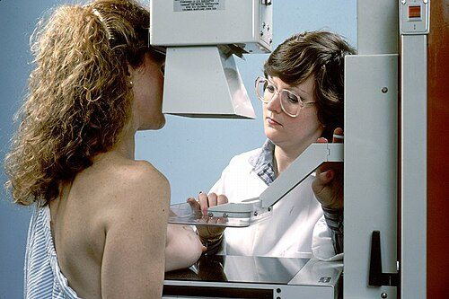
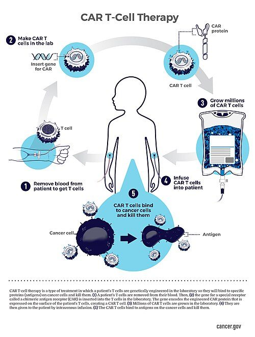

An Egyptian medical text describes bulging tumours of the breast and concludes: "there is no treatment".
Read more
It is a copy of even older texts, perhaps from around 3000 BC. Among 48 cases of trauma is the first known description of what was probably breast cancer. The author distinguishes these cool, hard lumps from abscesses, and admits he cannot cure them. For millennia that phrase summed up the medicine of cancer.
c. 1550 BC
The Ebers papyrus
Another Egyptian papyrus, one of the longest medical texts of antiquity, describes tumours and suggests cutting some out with a knife and cauterising others.
Read more
It separates lumps that can be operated on from others best left alone, a caution repeated for centuries. Many of its remedies were ointments and rituals, but it shows that Egyptian doctors already observed tumours carefully.
Hippocratic physicians call certain tumours karkinos (crab), because of the vessels spreading around them like legs.
Read more
That Greek word gave us "carcinoma" and, through the Latin cancer, the word cancer itself. Centuries later Celsus translated the term into Latin and Galen used oncos (swelling, mass), the origin of "oncology". The explanation at the time was humoral: an excess of black bile.
The Greek physician Galen, in Rome, attributes cancer to an excess of black bile, one of the four humours.
Read more
His authority was so great that the black bile theory dominated European and Arab medicine for more than 1,300 years. Galen used the word oncos (swelling), from which oncology comes, and advised against operating on advanced tumours.
c. 1000
Albucasis and cancer surgery
The Andalusian surgeon Albucasis (al-Zahrawi), in Córdoba, describes in his encyclopaedia the removal of tumours of the breast and other areas.
Read more
His work Al-Tasrif, translated into Latin, was used in European universities for centuries. He advised removing small tumours completely and cauterising, and warned that large, fixed ones should not be touched.
Andreas Vesalius publishes De humani corporis fabrica, the first great anatomical atlas based on dissection of human bodies.
Read more
On opening bodies, anatomists did not find the black bile that, according to Galen, caused cancer. It was the beginning of the end of humoral theory, although it took two more centuries to abandon it.
The Italian physician Bernardino Ramazzini observes that nuns have more breast cancer and less cervical cancer than other women.
Read more
He linked it to their celibate life. We now know that not having children raises breast cancer risk and that cervical cancer is caused by sexually transmitted HPV. Ramazzini is regarded as the father of occupational medicine.
1740
The first cancer hospital
In Reims (France) the first hospital devoted only to cancer patients opens, thanks to a bequest from the canon Jean Godinot.
Read more
It had to move outside the city because many residents believed cancer was contagious. The idea of specialist centres spread in the 19th century, with hospitals such as the Royal Marsden in London (1851).
1761
Morgagni and the autopsy
Giovanni Battista Morgagni links patients' symptoms to what he finds in their organs after death.
Read more
De sedibus et causis morborum gathers hundreds of autopsies. It was a change of outlook: disease has a place in the body. Without that idea there would have been no cancer surgery or pathology.
1761
John Hill and snuff
The London physician John Hill links the use of snuff (powdered tobacco for inhaling) to tumours of the nose.
Read more
It is the first published warning that tobacco can cause cancer, almost two centuries before Doll and Hill's studies on cigarettes and lung cancer.
A London surgeon links soot to scrotal cancer in chimney sweeps: the first environmental cause described.
Read more
Chimney sweeps started work as children, climbing narrow chimneys, and soot built up on their skin for years. Pott described the scrotal cancer that appeared in them when young. It was the first time a cancer was linked to an occupational exposure, and the basis of prevention. Percivall Pott.
1829
The word "metastasis" is born
The French gynaecologist Joseph Récamier first uses the term metastasis to describe the spread of cancer to other organs.
Read more
Récamier described the invasion of the brain by a breast cancer. Throughout the 19th century it was debated whether metastases travelled in the blood, in the lymph or arose on the spot, and the definitive answer came with the microscope.
The British pathologist Thomas Hodgkin describes seven patients with enlarged lymph nodes and spleen: the first description of the lymphoma that bears his name.
Read more
In 1865 Samuel Wilks revived his work and called it Hodgkin's disease. More than a century later, Hodgkin lymphoma would be one of the first advanced cancers cured with chemotherapy.
1846-1867
Anaesthesia and antisepsis
Ether anaesthesia (1846) and Joseph Lister's antisepsis (1867) make long, safe operations possible.
Read more
Before then, surgery was fast, painful and carried a huge risk of infection. Thanks to these advances surgeons could remove internal tumours for the first time, and modern cancer surgery was born.
Rudolf Virchow publishes his Cellular Pathology: tumours are made of cells that come from the body's own cells.
Read more
Johannes Müller had shown in 1838 that tumours were made of cells. Virchow went further with his motto omnis cellula e cellula. The microscope became the tool for diagnosing cancer, as it still is today.
1881
Billroth removes a stomach cancer
The Austrian surgeon Theodor Billroth performs in Vienna the first successful gastrectomy on a patient with stomach cancer.
Read more
Billroth also performed the first removals of the oesophagus and larynx. His school trained many of the great surgeons of the era and showed that surgery could cure some internal cancers.
The English surgeon Stephen Paget studies 735 breast cancer autopsies and proposes that metastases depend on the "seed" and the "soil".
Read more
He saw that metastases are not spread at random: they favour certain organs, such as bone or liver. His theory still holds and underpins current research on how tumour cells colonise other tissues.
William Halsted publishes his results with very extensive surgery for breast cancer, which would dominate practice for 80 years.
Read more
The idea was that cancer spread in an orderly way from the breast to the lymph nodes, and that removing a lot of tissue cut it out at the root. The operation saved lives when diagnosis was late, but caused major after-effects. Bernard Fisher's trials later showed that smaller operations with radiotherapy gave the same results.
Wilhelm Röntgen discovers X-rays, and within months several doctors are using them to treat tumours.
Read more
It was soon seen that radiation could destroy tissue, and also that it harmed those who handled it without protection. Radiotherapy was born this way, amid enthusiasm and burns, long before its biology was understood.
1896
Beatson and the first hormone therapy
The Scottish surgeon George Beatson removes the ovaries of women with advanced breast cancer and sees some tumours shrink.
Read more
Oestrogens were not yet known. It was the first evidence that hormones influence the growth of some cancers, and the forerunner of tamoxifen and aromatase inhibitors.
Image: Underwood & Underwood / Wide World Photos · Public domain · Wikimedia Commons1898
Marie and Pierre Curie discover radium
The discovery of polonium and radium opens the way to Curietherapy, radiotherapy with radioactive sources.
Read more
Marie Curie received the Nobel Prize in Physics in 1903, with Pierre Curie and Henri Becquerel, and the Nobel Prize in Chemistry in 1911. The Radium Institute in Paris, founded with her drive, was one of the great radiotherapy centres of the 20th century. Marie Curie.
1911
Peyton Rous and a virus that causes cancer
Rous shows that a chicken sarcoma can be transmitted by a cell-free filtrate: it is caused by a virus.
Read more
For decades it was considered a curiosity of birds. The finding was key to the discovery of oncogenes, and Rous received the Nobel Prize in 1966, 55 years later.
1914
Boveri and chromosomes
Theodor Boveri proposes that cancer arises from a cell with an abnormal set of chromosomes.
Read more
He deduced it from sea urchin embryos, without being able to see it in human tumours. His hypothesis anticipated the modern idea of cancer as a disease of the cell's genome.
1915
Tar and rabbit ears
Katsusaburo Yamagiwa and Koichi Ichikawa, in Tokyo, induce skin cancer by painting rabbits' ears with tar for months.
Read more
It was the first time cancer had been produced in the laboratory with a chemical, confirming Pott's observation about soot. It opened the study of chemical carcinogens, such as those in tobacco smoke.
1926
A mistaken Nobel
Johannes Fibiger receives the Nobel Prize for showing that a parasitic worm causes stomach cancer in rats.
Read more
Years later it emerged that the tumours were probably due to vitamin A deficiency, not the parasite. It is a reminder that science also advances by correcting its mistakes.
George Papanicolaou presents a method to see cancer cells in samples from the cervix.
Read more
It was slow to be accepted: his 1943 monograph with Herbert Traut convinced the medical community. The smear made it possible to detect precancerous changes and drastically reduced cervical cancer deaths wherever screening was organised. George Papanicolaou.
1937
The National Cancer Institute is born
The United States creates the National Cancer Institute (NCI), with a law passed unanimously by Congress.
Read more
It was the first large public agency devoted to cancer research. Today it is the world's biggest funder of cancer research and publishes the PDQ information we use as a source in Oncolopedia.
Charles Huggins shows that castration or oestrogens hold back metastatic prostate cancer.
Read more
It was the first time an advanced cancer had been controlled by systemic treatment. It earned him the Nobel Prize in 1966 and is the basis of today's hormone therapy.
1942-1946
From a war gas to the first chemotherapy
At Yale, Louis Goodman and Alfred Gilman treat a patient with lymphoma using nitrogen mustard, derived from mustard gas.
Read more
Soldiers exposed to mustard gas had been seen to have very few white blood cells. If it destroyed blood cells, perhaps it could destroy lymphoma cells. The tumour shrank for weeks. The results were published in 1946, after military secrecy was lifted.
Image: Unknown photographer/artist · Public domain · Wikimedia Commons1948
Sidney Farber and childhood leukaemia
Farber achieves the first temporary remissions of childhood leukaemia with aminopterin, an antifolate.
Read more
Until then acute leukaemia in children killed within weeks. The remissions were short, but they showed that a drug could make a cancer retreat. Today most children with acute lymphoblastic leukaemia are cured. Sidney Farber.
1950
Tobacco and lung cancer
Richard Doll and Austin Bradford Hill, and in parallel Ernst Wynder and Evarts Graham, show the link between smoking and lung cancer.
Read more
Doll and Hill's case-control study was followed by the follow-up of thousands of British doctors from 1951. It is one of the foundations of modern epidemiology and of the greatest cancer prevention measure: not smoking.
Image: TenOfAllTrades at English Wikipedia · Public domain · Wikimedia Commons1951
HeLa cells
Cells from Henrietta Lacks's cervical cancer are taken without her consent: the first human cells to live indefinitely in the laboratory.
Read more
HeLa cells were used for the polio vaccine, to study cancer and thousands of drugs, and to understand HPV. Her story transformed the debate on informed consent.
James Watson and Francis Crick, using data from Rosalind Franklin and Maurice Wilkins, describe the double helix structure of DNA.
Read more
Understanding how DNA is copied made it possible to explain what a mutation is and, over the years, how accumulated mutations turn a normal cell into a cancer cell.
1956
The first cure with chemotherapy
Min Chiu Li and Roy Hertz cure women with metastatic choriocarcinoma, a tumour of the placenta, with methotrexate.
Read more
It was the first time a solid tumour with metastases had been cured by drugs alone. Li also showed that treatment should continue until the blood marker, hCG, disappeared, even when the tumour could no longer be seen.
1957
The first bone marrow transplant
E. Donnall Thomas performs the first bone marrow transplants in patients with leukaemia, in New York.
Read more
The first attempts failed, but in the 1970s transplantation became a curative option for leukaemias and lymphomas. Thomas received the Nobel Prize in 1990.
Image: U.S. federal government · Public domain · Wikimedia Commons1960
The Philadelphia chromosome
Peter Nowell and David Hungerford discover an abnormally small chromosome in chronic myeloid leukaemia.
Read more
It was the first genetic change consistently linked to a cancer. In 1973 Janet Rowley showed it was a translocation, and in the 1980s the BCR-ABL fusion gene was identified, the target of imatinib.

Image: National Cancer Institute · Public domain · Wikimedia Commons1963
The first mammography screening trial
The HIP trial begins in New York, the first to show that mammography and examination reduce deaths from breast cancer.
Read more
About 62,000 women took part. Later trials in Sweden and other countries confirmed the benefit and led to the population screening programmes that exist today.
Image: United States Public Health Service · Public domain · Wikimedia Commons1964
The Surgeon General's report
The US Surgeon General, Luther Terry, publishes an official report concluding that cigarette smoking causes lung cancer.
Read more
It was released on a Saturday so as not to crash the stock market. It was the start of warnings on packets, advertising restrictions and the decline in smoking, which has prevented millions of deaths.
1965
IARC is founded
The World Health Organization creates the International Agency for Research on Cancer in Lyon.
Read more
IARC classifies which agents cause cancer in its Monographs, coordinates the Global Cancer Observatory (GLOBOCAN) and publishes the WHO classification of tumours and the European Code Against Cancer.
The United States passes the National Cancer Act. That same year Judah Folkman proposes treating tumours by stopping them forming blood vessels.
Read more
The act multiplied research funding. Folkman's idea, met with scepticism, led decades later to anti-angiogenic drugs such as bevacizumab. Judah Folkman.
The first computed tomography scan of a patient is performed in London, showing a brain tumour.
Read more
Godfrey Hounsfield developed it at EMI, the Beatles' record company. CT, and later MRI and PET, transformed the diagnosis and staging of cancer. Hounsfield and Allan Cormack received the Nobel Prize in 1979.
1971
The two-hit theory
Alfred Knudson proposes, from studying retinoblastoma, that two mutations are needed for the tumour to form.
Read more
In children with the inherited form, the first mutation is present from birth and one more hit is enough. This idea led to the discovery of tumour suppressor genes, beginning with RB1 in 1986.
J. Michael Bishop and Harold Varmus show that oncogenes are normal genes of our own cells. Gianni Bonadonna publishes the adjuvant chemotherapy trial in breast cancer.
Read more
Oncogenes did not come from outside: they were in our genome and caused cancer when altered (Nobel Prize 1989). In Milan, Bonadonna showed that chemotherapy after surgery reduced relapses, a strategy that saves many lives today.
Tamoxifen is approved for breast cancer, the first drug to block the effect of oestrogens on the tumour.
Read more
It had been synthesised in 1962 as a possible contraceptive. Today, taken for years after surgery, it greatly reduces relapses of hormone receptor-positive breast cancers, and remains on the WHO list of essential medicines.
1978
Cisplatin cures testicular cancer
Cisplatin is approved. Combined with other drugs, it makes metastatic testicular cancer curable in most cases.
Read more
Barnett Rosenberg discovered it by chance in 1965, when he saw bacteria stop dividing near platinum electrodes. Lawrence Einhorn showed in 1977 the effectiveness of the combination with vinblastine and bleomycin.
1979
p53 is discovered
Several groups identify the p53 protein, later recognised as the "guardian of the genome".
Read more
At first it was thought to be an oncogene. In the late 1980s it was found to be a tumour suppressor gene: it stops damaged cells dividing. It is altered in about half of human cancers.
1981
A vaccine that prevents a cancer
The hepatitis B vaccine is approved. By preventing chronic infection, it prevents many cases of liver cancer.
Read more
Taiwan vaccinated all newborns from 1984, and within a few years liver cancer in children fell. It was the first vaccine able to prevent a cancer, 25 years before the HPV vaccine.
The teams of Mariano Barbacid, Robert Weinberg and Michael Wigler isolate the RAS oncogene from a human bladder tumour.
Read more
Barbacid and his team also identified the point mutation that activates it. It was the first proof that a single change in one letter of DNA could contribute to a human cancer. Mariano Barbacid.
Image: Laboratory of Tumor Virus Biology (NCI) · Public domain · Wikimedia Commons1983-1984
Human papillomavirus
Harald zur Hausen identifies HPV types 16 and 18 in cervical tumours.
Read more
It showed that this cancer is almost always due to a persistent infection, and led to HPV vaccines. Zur Hausen received the Nobel Prize in 2008.
Bernard Fisher reports that breast-conserving surgery with radiotherapy gives the same results as mastectomy in many breast cancers.
Read more
The NSABP B-06 trial overturned Halsted's idea: breast cancer could be a systemic disease from the start, and what mattered was treating it as a whole, not removing ever more tissue. Bernard Fisher.
1990
BRCA1 on chromosome 17
Mary-Claire King shows that a gene on chromosome 17 causes inherited breast cancer in many families.
Read more
The gene, BRCA1, was isolated in 1994. Its discovery changed genetic counselling and prevention in families with a lot of breast and ovarian cancer.
1993
Removing polyps prevents bowel cancer
The National Polyp Study shows that removing polyps during colonoscopy greatly reduces colorectal cancers.
Read more
It confirmed that most bowel cancers arise from polyps that take years to become malignant. It is the basis of screening with faecal occult blood tests and colonoscopy.
1994-1995
BRCA1 and BRCA2
The two best-known genes for hereditary breast and ovarian cancer are identified.
Read more
Mary-Claire King had located BRCA1 on chromosome 17 in 1990. Identifying the genes made it possible to offer genetic testing, surveillance and preventive surgery to families at highest risk.
1997-1998
The first monoclonal antibodies
Rituximab is approved for lymphoma and trastuzumab for HER2-positive breast cancer.
Read more
They were the first widely used "targeted" treatments: antibodies that recognise a specific protein on tumour cells. Trastuzumab changed the outlook of a particularly aggressive type of breast cancer.
2000
The hallmarks of cancer
Douglas Hanahan and Robert Weinberg publish "The hallmarks of cancer", summarising in six capabilities what makes a cell cancerous.
Read more
Growing without signals, ignoring brakes, avoiding cell death, dividing without limit, making blood vessels and spreading. In 2011 they added others, such as evading the immune system. It is one of the most cited papers in biology.
Imatinib is approved for chronic myeloid leukaemia, a drug designed against the BCR-ABL protein.
Read more
Brian Druker and colleagues showed that blocking a single altered protein controlled the disease for years with a daily tablet. It became the model for precision medicine. Brian Druker.
The sequence of the human genome is completed after 13 years of international work.
Read more
It cost about 3 billion dollars. Today sequencing a tumour's genome costs far less and takes days, making it possible to look for treatable mutations in each patient.
2004
EGFR mutations in lung cancer
Three groups discover that lung cancer patients who respond dramatically to gefitinib have mutations in the EGFR gene.
Read more
It was the start of routine molecular testing in lung cancer. Today EGFR, ALK, ROS1, KRAS and other alterations are tested for, each with specific targeted treatments.
The first vaccine against human papillomavirus is approved, preventing most cervical cancers.
Read more
Countries with good coverage already see a large fall in precancerous changes and cervical cancer in vaccinated generations. Many countries now vaccinate both girls and boys.
2006
The Cancer Genome Atlas
The United States launches The Cancer Genome Atlas (TCGA), which will sequence more than 11,000 tumours of 33 cancer types.
Read more
Its public data showed that tumours of the same organ can be molecularly very different, and that tumours of different organs can share alterations.
Ipilimumab is approved for advanced melanoma, the first immune checkpoint inhibitor.
Read more
James Allison had shown that blocking CTLA-4 let lymphocytes attack tumours. In 2014 came the anti-PD-1 drugs nivolumab and pembrolizumab, based on Tasuku Honjo's discovery of PD-1. Both received the Nobel Prize in 2018. Allison and Honjo.
2015
Immunotherapy and Jimmy Carter's melanoma
Former president Jimmy Carter, aged 90, announces he has brain metastases from melanoma. After surgery, radiotherapy and pembrolizumab, the cancer disappears.
Read more
His case made immunotherapy known to the general public. Before these drugs, metastatic melanoma meant survival of months; now a large share of patients live for many years.

Image: National Cancer Institute · Public domain · Wikimedia Commons2017
CAR-T and "tumour-agnostic" treatments
The first CAR-T therapy is approved and, for the first time, a cancer drug is approved for a tumour feature rather than its organ of origin.
Read more
CAR-T cells are the patient's own lymphocytes modified in the laboratory to recognise malignant cells; the first was approved for acute lymphoblastic leukaemia. That same year pembrolizumab was approved for tumours with microsatellite instability, wherever they arose.
James Allison and Tasuku Honjo receive the Nobel Prize in Medicine for discovering how to release the immune system's brakes against cancer.
Read more
Allison studied CTLA-4 and Honjo PD-1. Drugs that block them are now used in more than 20 types of cancer.
2020
Eliminating cervical cancer
The WHO launches a global strategy to eliminate cervical cancer as a public health problem.
Read more
The 2030 targets are 90-70-90: 90% of girls vaccinated against HPV by 15, 70% of women screened with a high-performance test by 35 and 45, and 90% of women with precancer or cancer treated.
2021
An "impossible" target
Sotorasib is approved, the first drug against the G12C mutation of the KRAS gene, a target considered impossible to hit.
Read more
KRAS is the most frequently mutated oncogene in human cancer, discovered in 1982. For almost 40 years attempts to block it failed.
2023
Personalised RNA vaccines
A trial shows that a messenger RNA vaccine designed from the mutations of each patient's tumour, together with pembrolizumab, reduces melanoma relapses.
Read more
The same technology as the COVID-19 vaccines is being applied to cancer. It is being studied in melanoma, pancreatic, lung and other tumours.
2024
20 million cases a year
IARC publishes the GLOBOCAN 2022 estimates: about 20 million new cases and 9.7 million cancer deaths worldwide.
Read more
Lung cancer is again the most common, followed by breast, colorectal and prostate cancer. IARC estimates that cases will rise sharply by 2050 because of ageing and population growth, and that a large share could be prevented.
Sources
Mukherjee, S. (2010). The Emperor of All Maladies: A Biography of Cancer. Scribner.
DeVita, V. T. and Chu, E. (2008). A history of cancer chemotherapy. Cancer Research, 68(21), 8643–8653.
Hajdu, S. I. (2011). A note from history: landmarks in history of cancer, part 1. Cancer, 117(5), 1097–1102.
Doll, R. and Hill, A. B. (1950). Smoking and carcinoma of the lung. British Medical Journal, 2, 739–748.
Farber, S. et al. (1948). Temporary remissions in acute leukemia in children produced by folic acid antagonist, 4-aminopteroyl-glutamic acid. New England Journal of Medicine, 238, 787–793.
Fisher, B. et al. (1985). Five-year results of a randomized clinical trial comparing total mastectomy and segmental mastectomy with or without radiation. New England Journal of Medicine, 312, 665–673.
Bray, F. et al. (2024). Global cancer statistics 2022: GLOBOCAN estimates of incidence and mortality worldwide for 36 cancers in 185 countries. CA: A Cancer Journal for Clinicians, 74, 229–263.
The Nobel Prize. Physiology or Medicine prizes of 1966, 1989, 2008 and 2018. nobelprize.org.
World Health Organization (2020). Global strategy to accelerate the elimination of cervical cancer as a public health problem.
Hanahan, D. and Weinberg, R. A. (2000). The hallmarks of cancer. Cell, 100(1), 57–70.
Li, M. C., Hertz, R. and Spencer, D. B. (1956). Effect of methotrexate therapy upon choriocarcinoma and chorioadenoma. Proceedings of the Society for Experimental Biology and Medicine, 93, 361–366.
Knudson, A. G. (1971). Mutation and cancer: statistical study of retinoblastoma. Proceedings of the National Academy of Sciences USA, 68(4), 820–823.
Paget, S. (1889). The distribution of secondary growths in cancer of the breast. The Lancet, 133(3421), 571–573.
U.S. Department of Health, Education, and Welfare (1964). Smoking and Health: Report of the Advisory Committee to the Surgeon General.
Hajdu, S. I. (2011-2012). A note from history: landmarks in history of cancer, parts 1 to 6. Cancer.
Text: Alejandro Rosàs, family physician · Updated: 2026-11-24


_(by_George_Romney).jpg){kind=link}
,_physician_and_social_reformer._O_Wellcome_V0017897.jpg){kind=link}


.jpg){kind=link}

.jpg){kind=link}


_EM.jpg){kind=link}


.JPG){kind=link}

.jpg){kind=link}